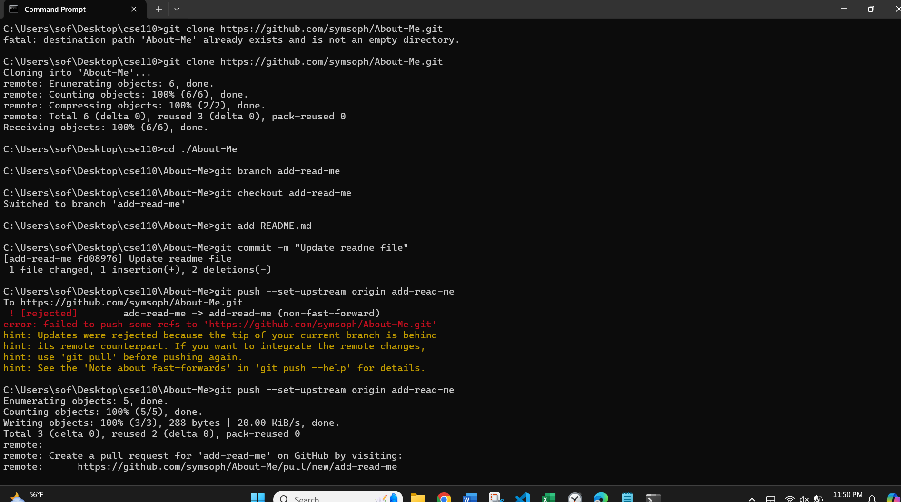
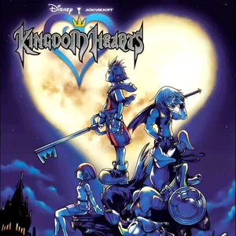

Here is my
favoritephoto of the week!
Description of Image Screenshot of git commands via the Windows Command Prompt.
Hello! I'm Sofia, striving to be a game dev, because I love all the ways the arts come together with technology to create an interactive, memorable, and enjoyable product. Really, I am chasing a career that allows me to express my creativity as an artist and musician and to think logically. Hopefully, it's game dev but I am learning about other career paths like those in sound engineering and UI/UX design.
We shall see.
This game changed in my life circa 2019.

Let's git it!
I love to read; my favorite authors and books:
Most Frequented Musicians in my Playlists (in no particular order)[^1]:
[^1]: I linked my favorite songs for each artist.
I need to git commit to this task list